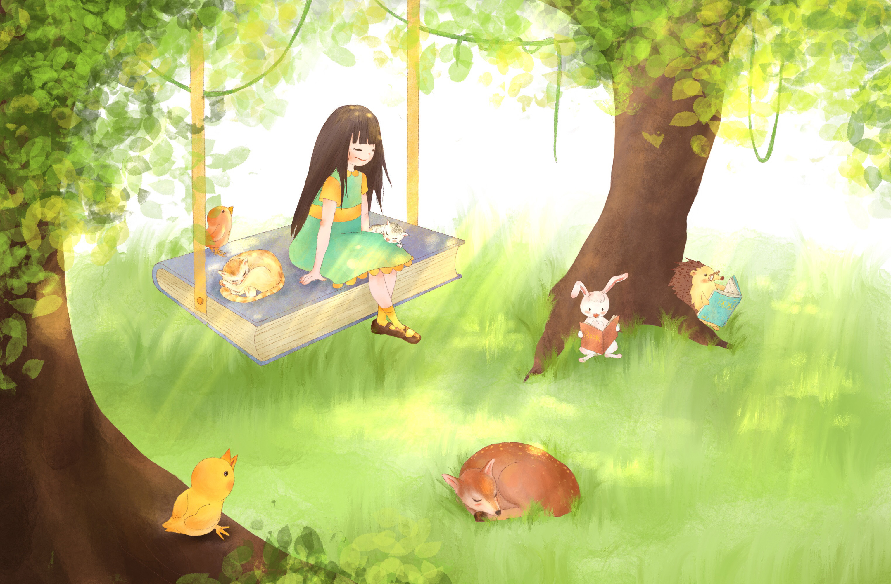

PROFILE
こんにちは。ぽてっとです。
今回は僕がどういう人物かどうかまとめてみました。下記にロードマップを用意しました。
- 1：僕の性格
- 2：どんなことが得意か
- 3：今後の方向性
上記のことについて、話していきます。
1：僕の性格

僕の性格は、穏やかだと思います。人前に出ると緊張します。
なるべく、揉め事は避けたいので、広く浅い人間関係を保っています。なので、いきなり距離を詰められると戸惑います。
かなりのインドアで、重度のパソコンオタクです。暇さえあればパソコン触るかtwitter見てます。twitter見る時間が長い人はフォロー返すんで、フォローよろしくお願いします。
本を読むのが好きです。嫌われる勇気とかモーニングメゾットとかが僕のバイブルです。
2：どんなことが得意か
僕の得意なものは、twitterのいいね周りです… 冗談です。
ほんとは、プログラミングです。詳しい人で今読んでいる人がいたら、先に謝っておきます。すみません。
プログラミングといってもフロントエンド言語です。プログラミング言語というかも怪しい言語です。そんな言語を僕は少しかじっています。得意といっていいのか？…
3：今後の方向性
将来については、不安が大きいのは正直なところです。
不安は大きいのですが、今の所決まっている方向は、薬剤師になることです。今現在、高校3年生なので、これから大学6年通って、ぼちぼち薬剤師になれたらいいなって思っています。
趣味で、プログラミングもできたらかっこいいと思うので、趣味としてプログラミングは続けていこうと思います。
これから、blogで自分の人生をコンテンツ化できたらいいなと、思っております。youtubeもやってみようかなと思っているので、ぜひtwitterの方フォローしといてください！
この記事は以上です。ここまでみてくださり、ありがとうございました😊